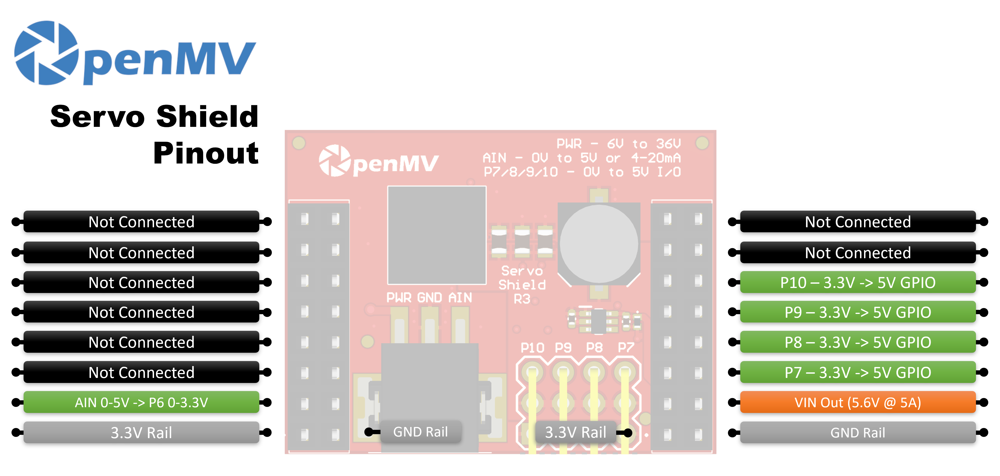

درع المؤازر¶
يقود درع المؤازر (الإصدار v3) ما يصل إلى أربعة مؤازرات هواة قياسية مباشرة من كاميرا OpenMV Cam. ويقبل منظّمه المدمج على اللوحة دخلاً بمدى 6–36 فولت على كتلة الأطراف ويوفّر 5.6 فولت بتيار يصل إلى 5 أمبير — وهو ما يكفي لتغذية الكاميرا والمؤازرات معاً من مصدر واحد.

للاطلاع على ورقة البيانات الكاملة والصور وطلب الشراء، راجع صفحة منتج درع المؤازر.
أبرز الميزات¶
قيادة ما يصل إلى أربعة مؤازرات هواة عبر P7 / P8 / P9 / P10
دخل 6–36 فولت على كتلة الأطراف (متحمّل لعكس الجهد)
5.6 فولت بتيار يصل إلى 5 أمبير على VIN — يغذّي الكاميرا والمؤازرات
دخل ADC بمدى 0–5 فولت مع حماية من فرط الجهد حتى ±36 فولت
دخل/خرج رقمي ثنائي الاتجاه بمدى 0–5 فولت مع تحويل المستوى من 3.3 فولت إلى 5 فولت
مخطط الأطراف¶
{kind=link}

مرجع الأطراف¶
الطرف |
الوظيفة |
|---|---|
P6 |
قراءة AIN بعد تحويل المستوى (0–3.3 فولت على P6) |
P7 |
المؤازر 1 — GPIO ثنائي الاتجاه 3.3 فولت ↔ 5 فولت |
P8 |
المؤازر 2 — GPIO ثنائي الاتجاه 3.3 فولت ↔ 5 فولت |
P9 |
المؤازر 3 — GPIO ثنائي الاتجاه 3.3 فولت ↔ 5 فولت |
P10 |
المؤازر 4 — GPIO ثنائي الاتجاه 3.3 فولت ↔ 5 فولت |
دخل PWR |
دخل واسع 6–36 فولت على كتلة الأطراف (متحمّل لعكس الجهد) |
دخل AIN |
دخل تماثلي على كتلة الأطراف |
خرج VIN |
5.6 فولت منظّم، بتيار يصل إلى 5 أمبير مجمّع للمؤازرات والكاميرا |
خط 3.3V |
يغذّي إلكترونيات الدرع المدمجة على اللوحة |
خط GND |
أرضي مشترك |
ملاحظة
إن AIN محميّ من فرط الجهد حتى ±36 فولت وهو افتراضياً دخل جهد بمدى 0–5 فولت، يُخفَّض إلى 0–3.3 فولت على P6. صِل مَفصِل وضع 4–20 ميلي أمبير الموجود على الجانب الخلفي من الدرع لتحويل AIN إلى دخل حلقة تيار 4–20 ميلي أمبير.
ملاحظة
كل من P6–P10 موصول بالكاميرا عبر مقاومة بقيمة 0 أوم على الجانب الخلفي من الدرع. انزع المقاومة على أي طرف تريد إعادة استخدامه لأغراض غير ذات صلة.
ملاحظة
في الإصدار v2 من الدرع، تكون P6–P9 محوّلات مستوى أحادية الاتجاه 3.3 فولت → 5 فولت (للخرج فقط). أما P10 فهو خط رقمي مفتوح المصرف، مسحوب لأعلى إلى 3.3 فولت على جانب الكاميرا وإلى 5 فولت على جانب طرف المؤازر. وهو افتراضياً دخل — إذ يحوّل الدرع مستوى 0–5 فولت على طرف المؤازر إلى 0–3.3 فولت على P10. غيّر وصلة اللَحم المدمجة على اللوحة لقلب P10 إلى خرج، بحيث يحوّل المستوى من 0–3.3 فولت على P10 إلى 0–5 فولت على طرف المؤازر.
الاستخدام¶
قُد مؤازر هواة من أيٍّ من P7–P10 بإشارة PWM بتردد 50 هرتز. يختلف مدى عرض النبضة بين المؤازرات، لذا اضبط MIN_US و MAX_US لمطابقة مؤازراتك — القيم النموذجية تقع حول 1000–2000 ميكروثانية:
from machine import Pin, PWM
import time
MIN_US = 1000 # full-left pulse width (microseconds)
MAX_US = 2000 # full-right pulse width
servo = PWM(Pin("P7"), freq=50)
def angle(deg):
pulse_us = MIN_US + (deg * (MAX_US - MIN_US)) // 180
servo.duty_ns(pulse_us * 1000)
while True:
angle(0)
time.sleep(1)
angle(90)
time.sleep(1)
angle(180)
time.sleep(1)
اقرأ دخل كتلة أطراف AIN (تظهر النتيجة بعد تحويل المستوى على P6):
from machine import ADC
import time
ain = ADC("P6")
while True:
# 0–5 V on the AIN terminal scaled to 0–3.3 V on P6
v = ain.read_u16() * 3.3 / 65535
print("AIN:", v * (5.0 / 3.3), "V")
time.sleep_ms(100)